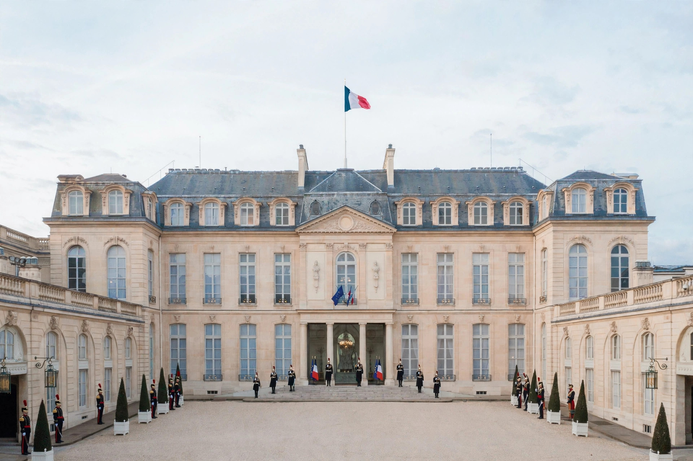

| President of the French Republic Président de la République française | |
| Incumbent | Emmanuel Macron (since 14 May 2017) |
|---|---|
| Term length | 5 years, renewable once consecutively |
| Residence | Élysée Palace, Paris |
| First holder (Fifth Republic) | Charles de Gaulle (1959) |
The President of France, officially the President of the French Republic, is the head of state of France and the commander-in-chief of the French Armed Forces. The office is the most powerful in the French political system: the President is elected directly by the people, appoints the Prime Minister, and may dissolve the National Assembly. The President is also, ex officio, Co-Prince of Andorra and honorary canon of the Basilica of St. John Lateran in Rome.
Since a referendum in 1962, the President has been elected by direct universal suffrage under a two-round system: if no candidate wins a majority in the first round, a run-off is held between the top two. Since a referendum in 2000 the term has been five years (the quinquennat), replacing the seven-year septennat; a 2008 constitutional revision limited Presidents to two consecutive terms. Candidates must obtain the sponsorship (parrainage) of 500 elected officials.
Under Article 5 of the Constitution of the Fifth Republic, the President ensures respect for the Constitution, the proper functioning of the public authorities, and the continuity and territorial integrity of the State. The President appoints the Prime Minister and, on the Prime Minister's proposal, the other ministers; promulgates laws; may refer bills to referendum (Article 11) and dissolve the National Assembly (Article 12); negotiates and ratifies treaties; accredits ambassadors; grants individual pardons; and controls the use of France's nuclear deterrent. Article 16 grants sweeping emergency powers where the institutions of the Republic are gravely threatened; it has been used only once, in 1961. Conversely, the President enjoys broad immunity from prosecution while in office (Article 68).
The office has been held by Charles de Gaulle (1959–1969), Georges Pompidou (1969–1974), Valéry Giscard d'Estaing (1974–1981), François Mitterrand (1981–1995), Jacques Chirac (1995–2007), Nicolas Sarkozy (2007–2012), François Hollande (2012–2017) and Emmanuel Macron (from 2017). Mitterrand remains the longest-serving President of the Republic, with fourteen years in office.